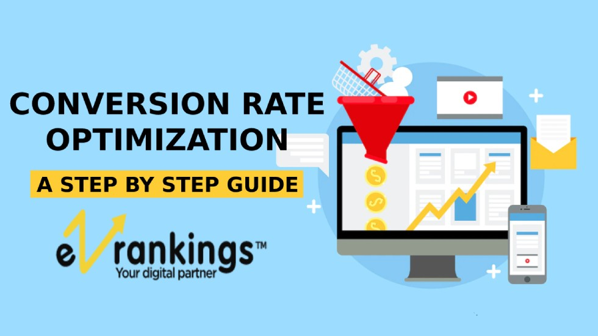
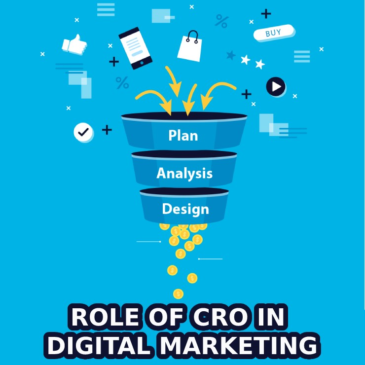
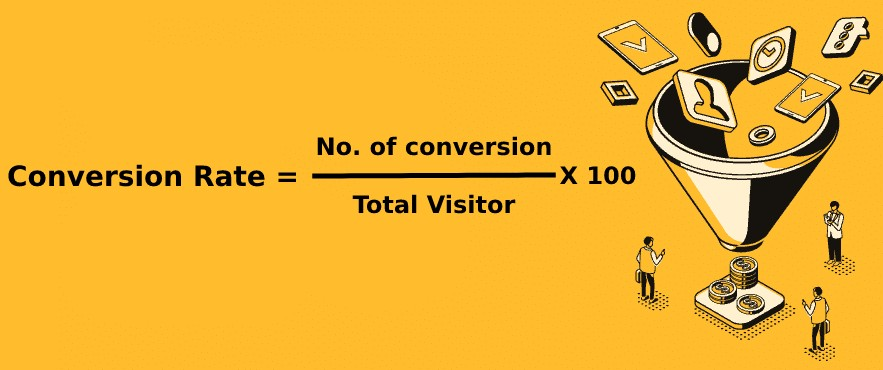
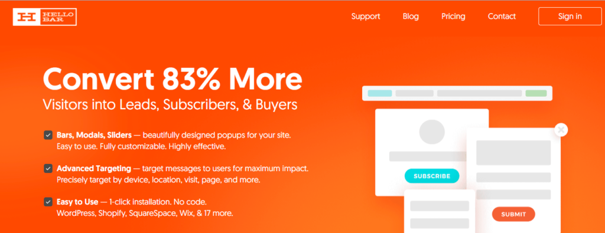
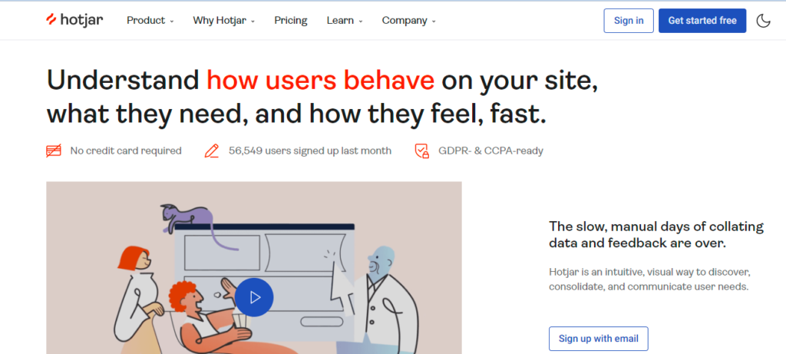
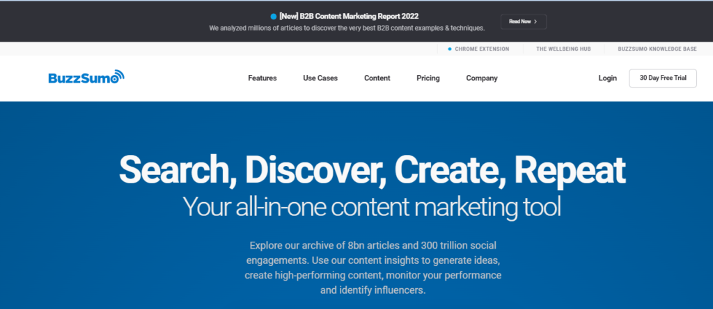
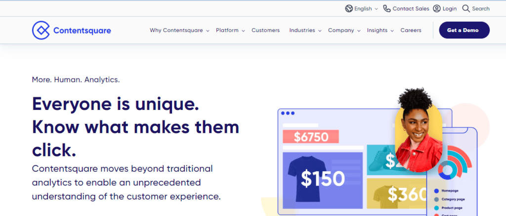
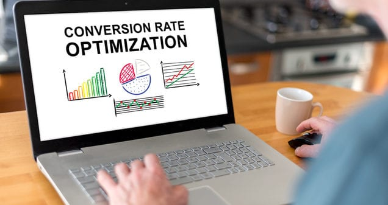

Conversion Rate Optimization (CRO): A Step-by-Step Full Guide

Most marketing teams today are focused on driving traffic to websites in the hopes that this traffic will convert into qualified leads for sales representatives to close. However, this is only half the battle. Understanding your visitors, users, and customers and providing them with what they require is the best way to increase your website conversion rate.
This article will cover everything there is to know about conversion rate optimization guide, including the benefits and importance of CRO, how to calculate the conversion rate, the best tools and steps for CRO, and much more.
What is Conversion Rate Optimization?

The process of improving the user experience of your website or landing page depending on website visitor behavior to increase the likelihood that the visitor will take desired actions (conversions) on the specified page is known as conversion rate optimization or CRO. Split testing, workflow advancements, and content improvements all contribute to achieving CRO. Optimizing conversion rates generates highly qualified prospects, boosts sales, and lowers acquisition expenses.
What is CRO in Digital Marketing?

Talking about the numerous sectors that have profited from CRO, are agencies like digital marketing agencies, web development organizations, etc. Running conversion rate optimization campaigns for their websites or those of their clients can greatly increase conversions and income, which can improve the return on investment for their work, help retain clients, and provide a positive user experience for their company as a whole.
In the world of digital marketing, a CRO best practice is a widely held belief that a specific optimization action will guarantee an increase in conversion rate, such as:
- Use bright colors for all CTA (call-to-action) buttons.
- Place CTAs above the fold.
- Use urgency (e.g., time-limited offers) to increase sales.
- Always display testimonials.
- Use fewer form fields on your forms.
Digital marketing agencies that provide a variety of services to their clients, such as social media promotion, web content development, brand building, and so on, can pitch CRO services to their clients as a way to maximize the value of their existing traffic. This will not only help them pitch more clients by providing an additional service in addition to their usual services, but it will also increase their overall business impact.
Why is Conversion Rate Optimization Important?
Conversion rate optimization guide is important because it allows you to reduce customer acquisition costs by extracting more value from existing visitors and users. You can increase revenue per visitor, acquire more customers, and grow your business by optimizing your conversion rate.
When it comes to increasing conversions, there is always room for improvement, and the best companies are constantly iterating and improving their sites and apps to provide a better experience for their users and grow conversions.
What are Conversion Rate Optimization (CRO) programs?
Broadly the advantages of a CRO program can be classified into two:
1. Improving Marketing ROI
An effective CRO program built on solid analysis can significantly increase the return on almost all of your marketing activities by:
- Improving the speed and quality of experiments conducted on your website: CRO enables you to evaluate the effectiveness of your site by conducting tests and seeking out the most promising variations that promise conversions.
- Increased revenue from the same amount of traffic/additional business returns: One of the main advantages of having a CRO campaign is that every adjustment you make to your website that leads to an increase in conversions is an incremental victory for your company.
2. Enhancing UX
The advantages of a CRO program go beyond marketing ROI to provide a better user experience across all stages of a visitor’s lifecycle, whether they are a first-time visitor or a customer, by:
- Customizing the online experience for site visitors: Visitors are impatient until you provide them with a website that is simple to use, requires a few clicks, and optimizes the process. You can make your website even more relevant to the users by assisting to customize sections of it based on their location, device, local time, or previous browsing behavior.
- Better visitor behavior insights: The CRO approach starts with a thorough understanding of consumer behavior using tools like click maps. These tools let you know which parts of a website users spend the most time on. User session replays and other CRO tools like these aid in understanding the user experience as a whole. Surveys on the website and form analytics also aid in understanding a visitor’s overall experience. Such qualitative data is sufficient to develop an effective user experience, further paving the road for conversions.
What is a Good Conversion Rate?
A good conversion rate optimization campaign will help you save a lot of time, money, and effort while also discovering previously untried growth options. In other words, conversion rate optimization provides you with insights into consumer behavior and advice on how to improve your user experience (UX) in order to achieve your objectives.
Your industry, niche, goals, traffic source, and audience demographics are just a few of the things that determine what constitutes a “good” conversion rate. For instance, in the third quarter of 2020, the average conversion rate for e-commerce sites worldwide fell from 2.37% to 2.17%. But with a conversion rate of 2.57%, e-commerce in the US performed better.
The average fluctuates depending on the niche in addition to the year and the nation. For instance, the average conversion rate for e-commerce sites in the food and beverage industry is 5.5%, compared to 3.5% for the hair care industry.
It’s time to optimize if your conversion rate is lower than you’d like – perhaps it’s below average for your industry, lower than your top rivals, or just underperforming to your own goals.
Conversions can occur on every page of your website, including the homepage, price page, blog, landing pages, and more. You should optimize each place to increase your chances of turning website visitors into paying consumers.
What is the KPI for Conversion?
Finding the conversion objectives for every specific web page or app screen is the first step in conversion rate optimization guide. Depending on the industry you’re in and the objectives you have, your website or mobile app’s success metrics will vary.
For instance, if you sell things online, you may pay for a conversion, which is the number of website users who add items to their shopping carts. The quantity of leads your website generates or the number of white papers downloaded may be the metrics you use to measure your success in selling goods or services to businesses.
Listed below are some common conversion objectives by kind of industry:
- Media – page visits, ad views, newsletter subscriptions, and interaction with suggested content
- E-commerce – product sales, add-to-carts, shopping cart completion rate, Sign-ups for email newsletters
- Travel – Conversions of travel bookings, auxiliary purchases, and social sharing
- B2B: deals closed and leads generated
Once you have identified the conversion metrics for your audience’s digital interactions with you, you can use conversion rate optimization to attempt to enhance their digital customer experiences.
How to Calculate The Conversion Rate (CRO)?

The number of conversions (desired actions done) is divided by the total number of visits, and the resulting number is multiplied by 100 to obtain the conversion rate.
Conversion rate = No. of conversion \ Total Visitor X 100
What is the Average Conversion Rate (CRO)?
According to what you read, the average conversion rate ranges from 1% to 4%. But let’s be honest: this number is kind of pointless because:
- Depending on the conversion goal, conversion rates might differ wildly (ad clicks, checkout completions, newsletter signups, etc.)
- Every webpage, website, and audience is unique.
- In any case, most people don’t openly disclose their conversion statistics.
There isn’t a concrete, all-encompassing industry benchmark you can measure yourself to or rely on with absolute certainty. The greatest method to approach conversion rate optimization is not to obsess over an average % and try to squeeze as many conversions as you can merely to keep in line with it. Once more, you’re better off concentrating on getting a deep grasp of what is important to your consumers so you can provide it to them; conversions will then come organically.
Best Conversion Rate Optimization Tools
It may sound strange coming from a company that provides a service that helps users optimize their websites, but we believe that the best conversion rate optimization tools are free.
1. HelloBar

The HelloBar plugin adds a range of popups to websites to convert visitors into consumers. With HelloBar, you can significantly decrease guessing when it comes to identifying high-conversion call-to-actions. Several analytics solutions, such as HelloBar Elementor, offer effective A/B testing and exact visual data.
2. HotJar

To better analyze customer journeys and processes, use HotJar’s heat mapping software. In simple words, HotJar embeds itself into web pages to offer a visual depiction of user activity in the form of colors. The color in those areas is bolder in areas with increased user engagement. Users can adjust websites with the use of this data for the best user experience and conversion rates.
3. ConvertBox

ConvertBox is yet another fantastic hosted application that enables you to create robust opt-in forms and call-to-action pop-ups to record customer journeys. With a variety of unique fields and layouts, ConvertBox provides customers and traffic with a more tailored experience. Segment funneling and A/B split testing are also supported. This enables you to select the best designs and tactics for maximizing conversions.
4. Google Analytics

One of the most often used free business intelligence tools is Google Analytics. To thoroughly map website performance, it combines Google Ads, Studio, Analytics, and other Google marketing services.
5. CrazyEgg

Crazy Egg maps customer interactions with your website using mouse-tracking technology. As a result, you can see where your traffic is coming from, which portions of your website are being clicked on, and which are being ignored. It’s similar to receiving a detailed x-ray of your website.
6. SurveyMonkey

In recent years, SurveyMonkey has been the go-to platform for developing online surveys, owing in large part to the tools accessible and easily adaptable survey designs. There are over 200 survey templates and 13 question kinds to pick from, including image-based questions.
7. HubSpot

Hubspot is a comprehensive CRM solution that offers scalable sales, marketing, content management, and many other conversion rate optimization tools. It also has the most versatile free plan among CRMs. You can manage a million clients free of cost and a host of free tools, including free business templates, invoices, and a blog idea generator.
8. BuzzSumo

BuzzSumo is a fantastic resource for content marketers and businesses seeking to achieve traction. It analyses social shares, likes, retweets, backlinks, and other engagement indicators to discover the most popular subjects. Topics can also be filtered based on date, geography, language, domain, word count, content type, and publisher size.
9. Content Square

Content Square is another customer journey mapping software designed to diagnose conversion-affecting issues on your website. However, what separates Content Square from other tools on this list is its unique metrics.
10. OptinMonster

OptinMonster is a lead-generation platform that includes features that boost newsletter signups, content engagement, and product sales. It’s also routinely updated and works with a variety of CRM platforms, including WordPress.
Apart from these best conversion rate optimization (CRO) tools, Your brain, ears, eyes, and mouth are the key tools you need to understand your consumers, sympathize with their experiences, form conclusions based on data, and finally, make adjustments that enhance your product conversion rates.
How Do You Use These Free CRO Tools?
Take note of how visitors interact with your website.
- Get involved in the market.
- Speak with the person who developed and created your website (as well as your product/service).
- Speak with the people that sell and support your product/service.
- Make connections between various sources of feedback.
All the other, traditional optimization tools are simply the means that help you do it. And they help in three ways:
-
Quantitative tools to uncover what is happening
Quantitative tools enable you to collect quantitative (numerical) data to track what is going on with your website.
- Tools for tracking website traffic in general (e.g., Google Analytics)
- Heat map tools for websites that aggregate the number of clicks, scrolling, and movements on a page
- Funnel tools that track when visitors leave a sales funnel
- Form analysis software that keeps track of form submissions
- Customer Happiness Tools (CSAT) that rate customer satisfaction on a scale of 1 to 10
- Tools that employ the Net Promoter System to assess the likelihood of people recommending your website/product to others on a scale of 0 to 10.
-
Qualitative tools to uncover why things happen
Qualitative tools assist you in gathering qualitative (non-numerical) data to determine why your website users behave the way they do. They are as follows:
- Website feedback tools (on-page and external link surveys) that ask visitors about their experience
- Website session recording and replay tools that demonstrate how individual people navigate your website
- Usability testing tools allow a panel of potential or current customers to provide feedback on your website.
- Online reviews where you can learn more about how other people felt about your company and goods
-
Tools to test changes and measure improvements
After you’ve gathered quantitative and qualitative feedback and acquired a clear understanding of what’s going on with your website, testing tools enable you to make adjustments and/or report on them to determine if your conversion optimization efforts are on track. They are as follows:
- A/B testing tools that enable you to compare various iterations of a page to see which one performs the best (recommended for high-traffic sites, so you can be certain your results are statistically valid)
- Website heat map + session recording tools that enable you to examine multiple variations of a page and the behavior on it
- Conversion-tracking analytics tools that track and monitor conversions
- Website feedback tools (such as visual feedback widgets or NPS dashboards) that enable you to collect qualitative input and quantify it so you can evaluate the before/after response to any modification you made.
Where to Implement a CRO Strategy?
The following four areas of your website could greatly profit from conversion rate optimization guide.
-
Homepage
Homepage Prime prospects for CRO are homepages. The homepage provides an opportunity to capture visitors’ attention and direct them further into your website in addition to serving as their first point of contact.
-
Pricing Page
For many website visitors, the pricing page may make or break their experience. By changing the pricing intervals (e.g., price-per-year vs. price-per-month), detailing the product features associated with each price, offering a phone number for visitors to contact for a price quote, or including a simple pop-up form, CRO can assist a pricing page convert visitors into buyers.
-
Blog
A blog offers a website a huge chance for conversion. A blog can employ CRO to turn visitors into leads in addition to delivering meaningful and beneficial information about your industry. Adding calls-to-action (CTA) to an article or asking readers to provide their email addresses in return for an eBook or industry report are frequent examples of how to do this.
-
Landing Pages
It makes logical that landing pages, with a conversion rate of 23%, have the highest average of all signup forms because they are inherently geared to encourage users to take an action. An event landing page, for instance, can be enhanced with a video from the last event to entice people to sign up for the current one. The preview content from a landing page that offers a free resource might be optimized to entice visitors to download it.
You might be wondering how to determine when your company is ready to begin the process now that you know where you can optimize for conversions.
What are the steps of Conversion Rate Optimization?

There are numerous frameworks for improving conversion rates that may be used to efficiently organize and carry out optimization initiatives. The CRO process can be broken down into 5 parts at its most basic level.
Step 1: The research phase – Identifying the areas of improvement
In general, marketers tend to mimic CRO techniques that work for other businesses in the belief that they will also be successful. However, they fall short since no orange button can convert, and no long-form page can stumble.
Understanding what users do (quantitative data)
Learning the fundamentals is the most important thing to do.
- Examine the behavior of your visitors.
- How do aspects of a page affect users’ behavior?
Understanding user behavior (qualitative data)
Customer psychology often establishes the essential guidelines that CRO components must adhere to.
The following are two key factors that help comprehend consumer psychology:
- Persuasion principles
- Consumer behavior
Step 2: The hypothesis phase – construct an educated hypothesis
You can now draft your hypothesis using the details acquired during the research process. A hypothesis is fundamentally a proposed explanation for your research that normally consists of three parts.
- A particular modification: based on conclusions drawn from both quantitative and qualitative data
- A particular effect: a target, a conversion metric, or something similar.
- A particular justification: the reasoning behind how a certain adjustment might result in the desired outcome.
Step 3: The prioritization phase – choose an order
Several frameworks can guide you through the process. We highly recommend Chris Goward’s P.I.E. framework from WiderFunnel:
- Potential
Find the pages that could use the most improvement and are performing the worst.
- Importance
Then select those with the highest valuable traffic to further refine your search. When traffic is expensive (paid) or extremely pertinent to your product offering, it is valued.
- Ease
It’s crucial to understand that not all sites can be easily optimized, even when you have a final list of pages. An e-commerce product listings page, for example, can be too technically challenging to begin optimizing, while your home page might have too many stakeholders for you to satisfy. Prioritize the one that can be easily optimized before moving up the list.
Step 4: The testing phase — A/B, split, or multivariate?
Learn the fundamentals before conducting a test:
- What exactly is statistical significance and why is it significant?
- How long a test should be run?
- Which test method—A/B, Split, or Multivariate—should you employ?
Step 5: The learning phase – how to analyze A/B test results
This is the step where you wrap up your experiments, complete the conversion rate optimization loop, and make a note of all the fresh data obtained for subsequent experiments. Unfortunately, the majority of optimizers merely review the test results to determine whether a variation was successful; if not, they return to developing new hypotheses.
Best Practices of Conversion Rate Optimization
There are a lot of CRO best practices available, but ultimately you need to figure out what your customers respond to and what generates results for your company.
When beginning conversion rate optimization today, keep in mind these follow-up activities:
- Start the CRO discussion by using the three formulas.
- Try out different CRO techniques to see what works best for your company.
- Use the PIE framework to aid in prioritizing your plan of action.
- Don’t Copy Your Competitors: Instead of copying your competitors, you should analyze your data to identify the issue, generate ideas that might address it, and then test your solutions.
- CRO is commonly confused with only A/B testing. A/B testing is simply one strategy that aids in the validation of our assumptions; however, CRO is much more than just A/B testing. It is a systematic framework or process that incorporates both quantitative and qualitative analysis.
- All Experiment Requires a Hypothesis: Without a hypothesis, it is unclear what is being tested in an experiment. Furthermore, there is no real method for you to determine whether your test was successful.
- Goals Must Be Well-Defined
- Don’t Stop, Edit, and Restart Your Experiment: What Happens When You Need to Make a Change During a Test? Most platforms provide you the option to pause, edit, and then resume your experiment. However, experts advise against doing such. In reality, carrying out such an action would seriously endanger the data. No matter how significant the modification, it has the potential to have an impact on user behavior and threaten the data’s integrity.
Mistakes Every CRO Beginner Must Avoid
Mistake 1: Making changes based on the opinion that statistics data
Simply because your site’s design is more stylish, modern, and has greater content than its prior iteration doesn’t guarantee that it will produce better outcomes. It doesn’t necessarily follow that you will achieve the same results on your site if you take inspiration from other companies who conducted an A/B test on their websites like yours and experienced an increase in conversions. This is because there isn’t a conversion optimization technique that works for everyone. What may be effective for one firm may not be equally effective for another.
Mistake 2: Writing copy that doesn’t align with your company’s goals
Good material that has been optimized for search engines can work miracles. However, if it is skewed and does not align with the objectives of your company, it is meaningless. Create original material that benefits your website.
Mistake 3: Conducting smaller tests before larger ones
The majority of individuals think that doing smaller tests is preferable to doing larger ones when it comes to CRO. Small testing will, in reality, have very little effect on conversion rates. Larger tests with higher probabilities, wherever more than two elements are tuned, will exclude a long-lasting, perceptible impact.
Mistake 4: Too many tests and pop-ups running simultaneously on one page
The analytical accuracy of each test can be considerably impacted by simultaneously running many tests. Every new component tested has the potential to affect other people’s test results. Additionally, having multiple pop-ups and site designs open throughout a user session interferes with their overall experience. Users may become annoyed and perplexed by these pop-ups, leaving the website and never returning.
Mistake 5: Neglecting the importance of fundamental design components
- putting a greater emphasis on automatic image sliders
- Using tacky stock images
- not giving videos much weight
Mistake 6: Minimizing the value of call-to-action buttons
Call-to-action buttons are among the most crucial page elements that influence visitors to your website to take the desired action and launch the conversion process. But frequently, marketers ignore CTAs and miss out on many potential conversions.
Mistake 7: Lack of a sense of urgency
A sense of urgency can dramatically enhance conversions, something few marketers are aware of. Your visitors are more likely to convert when you provide them with a limited-time incentive and a solid argument for why they should bother to do the desired action now as opposed to later.
Mistake 8: Not establishing a company’s credibility upfront
No matter how simple your website is or how powerful your call to action is, if you don’t provide your visitors with a sense of reliability or confidence in your website, it’s unlikely that you’ll increase your website’s conversion rate. Visitors should understand that you are a reliable business that isn’t going anywhere soon.
Mistake 9: Complexity with Conversion funnels
A series of pages leading to your conversion goal is known as a conversion funnel. You can set up the majority of web analytics tools so that you can see where visitors are leaking out of your conversion funnel visually.
What is the purpose of Conversion Rate Optimization?
To increase the possibility of website visitors taking the desired action, conversion rate optimization (CRO) is used. It is crucial because it enables you to maximize the value of your current users and visitors while lowering the cost of client acquisition. You can boost revenue per visitor, attract more clients, and expand your business by optimizing your conversion rate.
Benefits of Conversion Rate Optimization in SEO
Here are the benefits of CRO:
1. Enhanced Consumer Insights:
Finding the language or messaging that best meets their demands will help you better understand your key audience with the aid of conversion rate optimization. Finding the ideal clients for your organization is the focus of conversion rate optimization. If they aren’t the appropriate kind of individuals, adding additional employees won’t help your company.
2. Better ROI:
A higher conversion rate suggests that you are using your resources more efficiently. You can increase conversions without bringing in additional potential clients by learning how to maximize your acquisition efforts.
3. Better Scalability:
CRO allows you to expand without running out of resources or potential clients, even when your audience size may not scale as your organization does. The number of audiences is finite. You may expand your business without running out of potential clients by converting more browsers into purchases.
4. Better User Experience:
When visitors to your website feel educated and intelligent, they are more likely to stay. CRO examines what makes your website successful. You can improve user experience by building on what already works. Users that feel empowered by your website will interact with it more, and some may even spread the word about your company’s products and services.
5. Enhanced Trust:
A user must trust the website before sharing their credit card, email, or any other type of personal information. Your primary salesman is your website. Your website ought to be polished, polite, and prepared to address all of your clients’ inquiries, just like an internal sales team would.
FAQs:
Q. What can help you analyze conversion optimization?
Ans. Use tools for conversion rate optimization (CRO) that are both quantitative and qualitative, such as Google Analytics, to study conversion optimization. To effectively optimize, keep an eye out for these three aspects during your analysis:
- The drivers direct visitors to your website.
- The Barriers that might discourage them or Drive them to leave.
- The hooks convince them to change.
Q. How do you measure conversion rate?
Ans. Divide the entire number of conversions by the total number of visitors, then multiply the result by 100 to determine your conversion rate:
(Conversions / Visitors) x 100 = conversion rate
To determine whether the changes you make to your website enhance conversions, keep track of the changes you make and frequently check your conversion rate.
Q. How do you increase conversion rate optimization?
Ans. To increase conversion rate optimization, examine web pages that are underperforming in relation to your conversion goals using CRO tools to identify potential barriers that might be preventing visitors from taking the desired action, such as clicking a CTA button, subscribing to an email list, or adding something to their shopping cart.
The changes that should be evaluated on your pages (with A/B testing or multivariate testing) to increase conversion rates can be determined with greater certainty once you’ve identified any barriers your website visitors are encountering.
Q. What is a CRO strategy?
Ans. A conversion rate optimization strategy aims to turn more of your website’s visitors into paying clients. The general procedures won’t change even if each CRO approach will differ from company to firm. Key metrics and your intended audience must be determined. After that, decide what you’re going to test by gathering user input and other information. Finally, you will conduct A/B testing to optimize various pages and areas of your website for conversion.